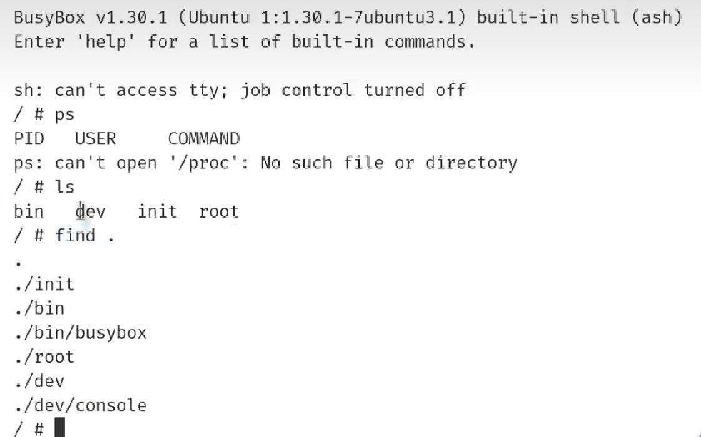
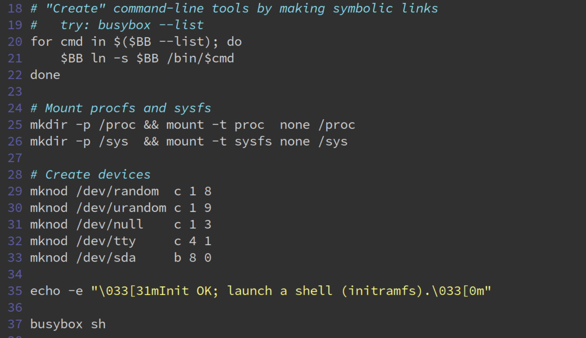
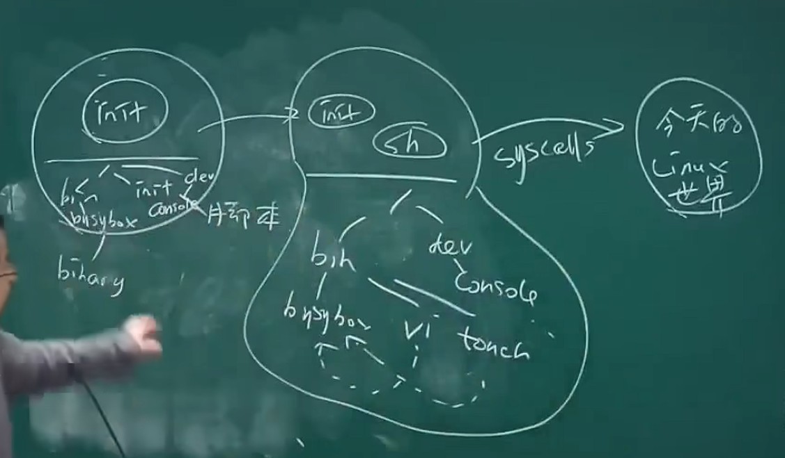
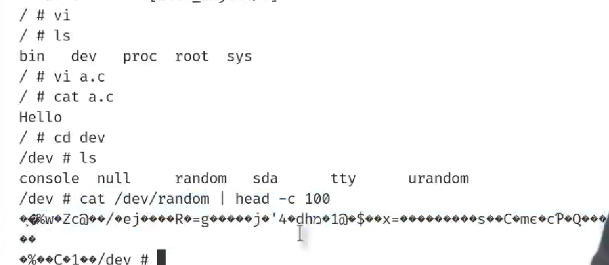
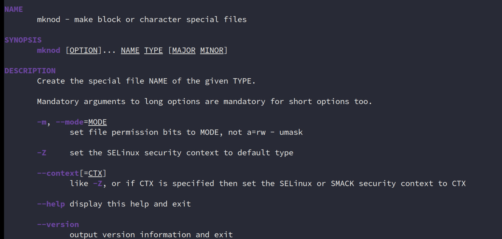
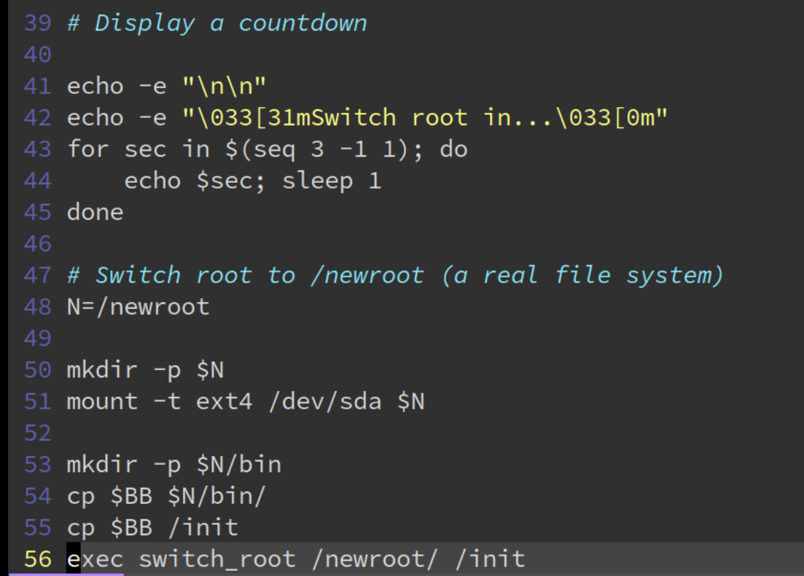
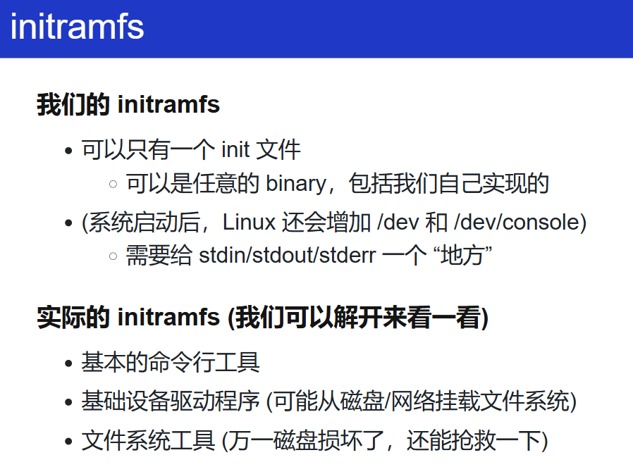
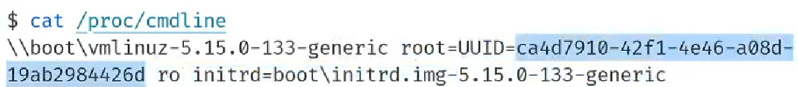
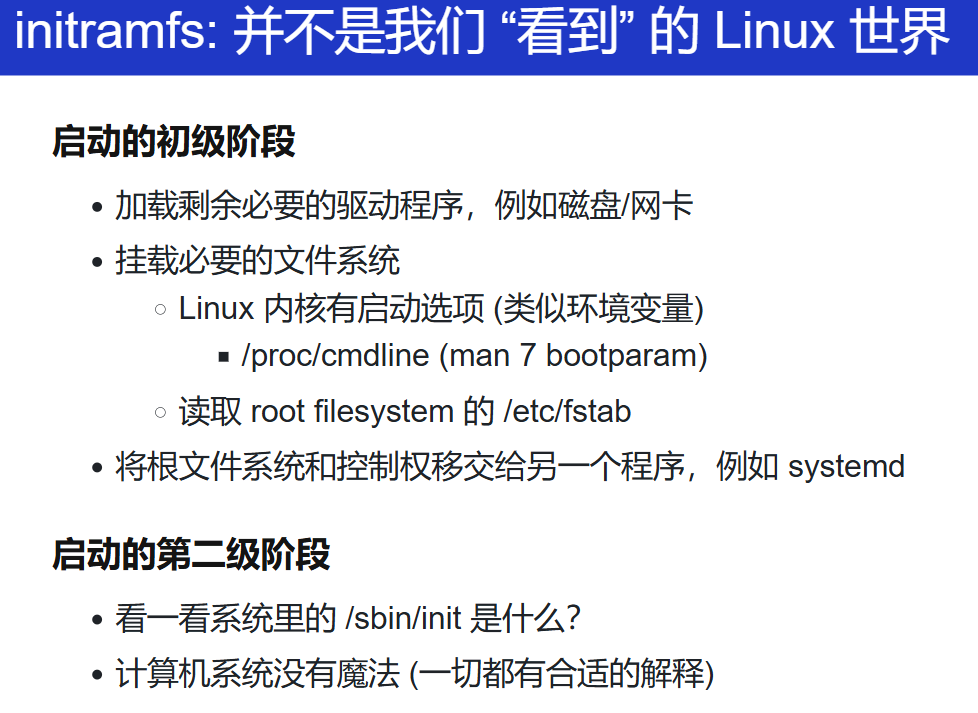
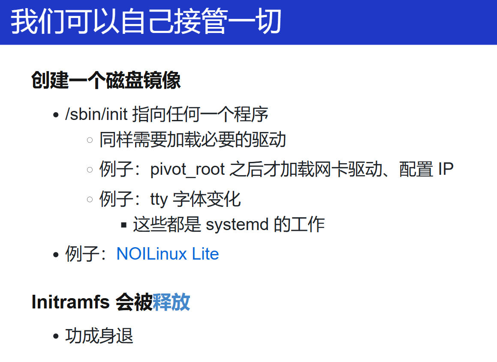

Introduction
开始
从这里开始，不会记录所有讲过的内容，仅会记录自己有兴趣或者自认觉得有价值的部分。
改进建议：
- 每一处地方都添加错误处理，别省着？
toybox-0.1.0 实现
每当我想起有这么个需求，再回来看看。
C语言解释器
绘制程序状态转移图
重点
一个重塑全人类的 prompt
我在做 [X]。如果你是一位专业人士，有更好的方法和建议吗？尽可能全面。
Firmware
想知道是哪一条指令写了这个0x7c00，这个固件究竟是怎么被装到这个地址的。
向 LLM 问出合理的问题。
调试 OpenSBI
学会 vim 和智能 agent
-
在 vim 中 使用外部的命令！
以前都没学会这个，只是懵懵懂懂的知道有这个，但是没体会到这个功能的强大性！
这就是 智能 agent 吗！！
再想想，在命令行/vim 中打开各种内容，借助vim和agent
第12课：
initramfs 和启动
notice：如果要实践老师的例子，记得开 KVM
先不去看 initramfs 是什么，先想想：Linux系统，是怎么一步步构建起今天这么庞大的世界的？他在初始化完成后，肯定会有一个初始状态，由人为/手动的指定的！计算机是一个只会执行指令的机器，肯定是经过了什么指令/操作，让运行在计算机上的简单程序变成今天这样的。
我想到的是 bootloader！计算机上电复位后，内部的ROM/RAM太小，不足以执行大程序，需要外部存储和bootloader，但这个时候应该也是有一些文件的，我需要管理！所以在bootloader阶段应该会有一个类似于根文件系统的东西来管理的？就是这个 initramfs！
initramfs 给应用生态建设者提供了这么一个机制
可以做一个目录，在目录里放你想要的任何文件（一个目录树），启动的时候就会出现这些内容，这就是 Linux 的初始状态！这个初始状态是由你构建的！在这个基础上，就能构建一切！
简略的os启动/最开始的状态/内容就这么点，很像我们控制的裸机程序（裸机上，结构上？），

连 /proc、/dev 这种划分进程、管理输入输出设备的文件系统都没有，ps 都不行。
但在这个基础上，就能构造出一个像今天一样的Linux的世界（通过很多的 syscalls、初始状态 initramfs再添加一些多一些内容），各种各样的工具、图形（可能稍微困难点）。。。
具体怎么进一步？exit就好了，接着执行下面的！

有意思的是那个 busybox 的符号链接，比如：busybox ln -s /bin/busybox /bin/vi

创建出了文件系统的结构。现在 ps / ls /proc[pid]/xxx 就可以了！
再测试一些基本工具，都是OK的！

但是，还有一个问题，我们还没有文件系统，文件系统怎么来？
从磁盘上来！/dev/sda。借助一个系统调用：mknod
mknod /dev/sda b 8 0
根据设备号，创建一个文件系统中的文件。（
mkfifo底层应该是这个）

但之后呢？磁盘上的内容，怎么进一步加到上面构建出来的文件系统的结构里去？
怎么将磁盘的内容叠加到那个初始状态里去？mount
Linux 刚启动的时候，并不是把所有内容都加载到文件系统里去的，我们只有一个 initramfs（刚开始的 root 就是这个），连 vim、gcc 都没有。怎么做？
启动的最后步骤：pivot_root / switch_root。我们需要把 root 换成 /dev/sda 上的 文件系统的 root，也就是将原来构建的内容摧毁掉，重新构建！

但既然这样的话，那为什么前面还要 initramfs 这么做？这么漫长的过程？

原因就是，在 initramfs 这个最早启动的过程中，需要把计算机系统必要的硬件都初始化好！
举个例子， initramfs 要做的内容 ：
-
真正的
/是在网络上的，所以需要网卡驱动；还有个 网络根文件系统（NFS/iSCSI），此时根文件系统位于远程服务器，需先配置网络和认证，所以
initramfs初始化网卡、启动 DHCP、加载 NFS 客户端模块。 -
如果
/是NVMe的，那就需要NVMe的控制器的驱动，也是类似的。或许会有些奇怪，Linux 内核不是初始化了驱动吗？为什么这里还要初始化呢？
实际上，
initramfs本质上是一个为内核定制的“最小化临时系统”，其设计哲学是：将硬件探测和模块加载推迟到用户空间（通过initramfs），仅加载启动必需的最小驱动集（例如 BIOS/UEFI 接口、初始磁盘控制器驱动），而非固化在内核中。联想到一些别的问题：(uboot启动过程既然已经初始化了部分硬件，为什么Linux内核中还是有这些硬件的驱动程序？
来自 DeepSeek的举的例子：
-
驱动加载：若根文件系统在 NVMe 磁盘上，需先加载
nvme驱动：# initramfs 中的操作（示例） modprobe nvme nvme_core modprobe nvme-pci -
复杂存储配置：
- 加密磁盘：需在 initramfs 中调用
cryptsetup解密 - LVM/RAID：需激活逻辑卷或 RAID 阵列
vgchange -ay # 激活 LVM 卷组 mdadm --assemble /dev/md0 /dev/sda1 /dev/sdb1 # 组装 RAID - 加密磁盘：需在 initramfs 中调用
-
网络根文件系统（NFS/iSCSI）：
ip=dhcp # 从 cmdline 获取网络配置 mount.nfs 192.168.1.100:/nfs_root /new_root
-
-
再比如，磁盘有损坏，但是磁盘中的
initramfs是好的，那这个系统还是可以起来的，这时就可以对这个磁盘的文件系统进行修复，修复后，再加载到内存上。e2fsck、xfs_repair
但功能实际上还不止这些，initramfs 还需要进一步！
之后，就到了挂载真正 root 文件系统的时候，即：将 /dev/sda 或者网络上真正的 root 挂载起来！也就是上面说的：pivot_root / switch_root！
switch_root命令背后的系统调用int pivot_root(const char *new_root, const char *put_old);
pivot_root()changes the root mount in the mount namespace of the calling process. More precisely, it moves the root mount to the directoryput_oldand makesnew_rootthe new root mount. The calling process must have theCAP_SYS_ADMINcapability in the user namespace that owns the caller's mount namespace.- syscalls(2)
但先别急，计算机怎么知道 rootfs 究竟在哪个地方？对于这种早期初始化级别的内容，肯定需要我们给出位置呀？还真是！也就是常看到的这个 /proc/cmdline ！
/proc/cmdline 显示各种信息：初始磁盘镜像位置、rootfs是哪个分区

具体来说，内核通过 root= 参数确定根文件系统位置，支持多种标识方式：
- 设备路径：
root=/dev/sda1（传统方式，易受设备顺序影响） - UUID：
root=UUID=1234-5678-9ABC（推荐，唯一标识文件系统） - PARTUUID：
root=PARTUUID=abcd1234（GPT 分区表的唯一分区标识） - 标签：
root=LABEL=MyRootFS（需文件系统有标签）
到这里，根文件系统挂载完成，简单总结流程：
graph LR
A[root=参数] --> B{是否包含 UUID/PARTUUID?}
B -->|是| C[通过 udev/blkid 查找设备]
B -->|否| D[直接访问设备路径]
C --> E[获取设备路径 如 /dev/nvme0n1p2 ]
D --> E
E --> F[加载对应驱动 ext4/btrfs]
F --> G[挂载为根文件系统]
但是，这距离现代使用的Linux发行版好像还差点什么？/home 用户数据、/boot（内核和引导文件，更新）、/var（日志）、交换分区（swap）等都没有。那具体怎么做？
有这么一个配置文件：/etc/fstab（File System Table）：用于定义除了 / 分区要挂载外，还有什么要挂载的，即文件系统挂载规则的核心配置文件。还是举例子：
- 日志服务（如
journald）需要/var/log可用。 - 用户登录需要访问
/home目录。 - 系统休眠依赖交换分区。
具体挑一个例子来看：
# /etc/fstab
UUID=1234-5678-9ABC / ext4 defaults 0 1
UUID=ABCD-EF01 /boot vfat defaults 0 2
UUID=5678-1234-9ABC /home ext4 defaults 0 2
UUID=9ABC-5678-1234 none swap sw 0 0
tmpfs /tmp tmpfs defaults,noatime 0 0
| 列序 | 名称 | 示例值 | 作用 |
|---|---|---|---|
| 1 | 设备标识 | UUID=... 或 /dev/sda1 |
指定要挂载的设备或文件系统 |
| 2 | 挂载点 | /, /boot, /home |
文件系统挂载到的目录 |
| 3 | 文件系统 | ext4, vfat, swap |
文件系统类型 |
| 4 | 挂载选项 | defaults, noatime |
控制读写权限、性能优化等（逗号分隔多个选项） |
| 5 | dump 备份 | 0 或 1 |
是否允许 dump 工具备份（现代系统通常设为 0） |
| 6 | fsck 顺序 | 0, 1, 2 |
启动时 fsck 检查顺序：1=根分区优先，2=其他，0=不检查 |
那具体来说是谁来解析这个 /etc/fstab 呢？DeepSeek 回答：由 systemd 或 mount 命令在真实根文件系统初始化阶段解析。
不管是谁来做，但知道有这么个过程！还是画个图：
flowchart LR
A[initramfs] --> B[挂载真实根文件系统rootfs]
B --> C[执行 pivot_root 切换]
C --> D[真实根文件系统]
D --> E[读取 /etc/fstab]
E --> F[挂载 /home, /boot, swap 等]
借助
DeepSeek总结：
场景 有 /etc/fstab无 /etc/fstab启动自动化 自动挂载所有分区，服务正常启动 需手动挂载，易遗漏导致服务失败 持久化配置 配置永久生效 每次重启需重新挂载 依赖管理 systemd 确保挂载顺序 依赖关系混乱，启动顺序不可控 错误恢复 自动检查文件系统错误 无法自动修复磁盘问题 复杂存储支持 支持加密、LVM、网络存储等高级配置 手动操作复杂且容易出错
最后，再将根文件系统和控制权移交给另一个程序，例如 systemd，做更多的事情！而进一步，这个systemd 又会再进一步做相关的内容，加载必要的驱动（网卡配置IP、TTY）。就是我们今天看到的应用程序的世界了！


再补充一些现代常看到的：
/sbin/init是 Linux 系统中 用户空间的第一个进程（PID 1），负责初始化系统服务和进程管理。举一些例子
传统 SysV init 系统
路径：
/sbin/init是 SysV init（传统初始化系统）的可执行文件。作用：按顺序执行
/etc/inittab中的脚本，启动运行级别（Runlevel）对应的服务。示例：
# 查看传统 init 系统的运行级别 cat /etc/inittab # 输出示例：id:3:initdefault:（运行级别3）现代 systemd 系统
路径：在 systemd 系统中，
/sbin/init通常是符号链接，指向/usr/lib/systemd/systemd。# 检查符号链接 ls -l /sbin/init # 输出示例：lrwxrwxrwx ... /sbin/init -> /usr/lib/systemd/systemd作用：
systemd作为 PID 1，管理服务并行启动、依赖关系、日志等。其他初始化系统
- Upstart（Ubuntu 早期版本）：
/sbin/init是 Upstart 的可执行文件。- OpenRC（Gentoo 等）：
/sbin/init链接到 OpenRC 的实现。
systemd的核心功能即使
/sbin/init指向systemd，其功能远超传统init：
服务管理：
systemctl start nginx # 启动服务 systemctl enable nginx # 设置开机自启日志管理（journald）：
journalctl -u nginx # 查看服务日志设备热插拔（udev）：
udevadm monitor # 监控设备事件系统状态快照：
systemd-analyze blame # 分析启动耗时
实践
flowchart TD
A[CPU 上电] --> B[Bootloader OpenSBI/U-Boot]
B --> C[加载内核镜像 Image/Image.gz]
C --> D[内核入口: _start arch/riscv/kernel/head.S]
D --> E[汇编级初始化]
E --> F[初始化页表/MMU]
F --> G[跳转到 start_kernel C 语言入口]
G --> H[内核初始化 init/main.c]
H --> I[挂载 initramfs]
I --> J[执行 /init]
J --> K[pivot_root 切换根文件系统]
K --> L[执行真实根文件系统的 /sbin/init systemd]
sequenceDiagram
participant HW as 硬件
participant BL as Bootloader
participant Kernel as Linux 内核
participant Initramfs
participant RootFS as 真实根文件系统
HW->>BL: 上电，执行第一条指令
BL->>Kernel: 加载内核镜像，传递 DTB
Kernel->>Kernel: 汇编初始化 → start_kernel
Kernel->>Initramfs: 解压并挂载 initramfs
Kernel->>Initramfs: 执行 /init
Initramfs->>RootFS: 挂载真实根文件系统
Initramfs->>Kernel: pivot_root 切换
Kernel->>RootFS: 执行 /sbin/init (systemd)
RootFS->>RootFS: 启动用户空间服务
存储
具体怎么启动起来的？
但先别急，计算机怎么知道
rootfs究竟在哪个地方？对于这种早期初始化级别的内容，肯定需要我们给出位置呀？还真是！也就是常看到的这个/proc/cmdline！
/proc/cmdline显示各种信息：初始磁盘镜像位置、rootfs是哪个分区
之前的这个内容，想详细了解怎么做？？？具体怎么启动分区的？
分区这个概念是什么？
boot、efi？
计算机系统安全
现代应用程序架构
Android
Android Apps
-
首先，是一个 Java 程序 (Kotlin)
-
其次，有运行模型
- Android Platform APIs
- android.view.View: “the basic building block for user interface components”
- android.webkit.WebView - 嵌入应用的网页
- android.hardware.camera2 - 相机
- android.database.database - 数据库
- 四大组件：
Activity（界面）,Service,ContentProvider,BroadcastReceiver
- Android Platform APIs
arch

final
记住各种system call，不是靠的是手册，而是各种各样的应用场景？
比如system call